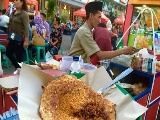
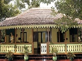
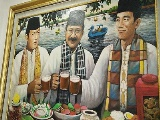

<div class="upage hidden black" id="setu">
            <div class="upage-outer">
                <div class="uib-header header-bg container-group inner-element uib_w_68" data-uib="layout/header" data-ver="0">
                    <h2>Wisata Jakarta</h2>
                    <div class="widget-container wrapping-col single-centered"></div>
                    <div class="widget-container content-area horiz-area wrapping-col left"></div>
                    <div class="widget-container content-area horiz-area wrapping-col right">
                        <button class="btn widget uib_w_86 d-margins btn-default mustard" data-uib="twitter%20bootstrap/button" data-ver="1" id="bckst"><i class="glyphicon glyphicon-chevron-left" data-position="icon only"></i>
                        </button>
                    </div>
                </div>
                <div class="upage-content ac0 content-area vertical-col left" id="page_87_55"></div>
                <!-- tab -->
                <div class="container">
                    <h3>Danau Setu Babakan</h3>
                </div>

                <div id="exTab2" class="container">
                    <ul class="nav nav-tabs">
                        <li class="active">
                            <a href="#41" data-toggle="tab">Beranda</a>
                        </li>
                        <li><a href="#42" data-toggle="tab">Informasi</a>
                        </li>
                        <li><a href="#43" data-toggle="tab">Fasilitas</a>
                        </li>
                        <li><a href="#44" data-toggle="tab">Peta</a>
                        </li>
                    </ul>

                    <div class="tab-content ">
                        <div class="tab-pane active" id="41">
                            <h3>Deskripsi Setu Babakan</h3>
                            <br>
                            <center>
                                
                            </center>

                            <p>Danau Setu babakan adalah sebuah danau buatan yang dijadikan tempat wisata oleh warga setempat. Sebenarnya fungsi utama dari danau ini bukanlah untuk destinasi wisata. Pada awal pembangunanya, danau ini berfungsi sebagai penampung
                                air resapan, tetapi seiring berjalannya waktu, danau ini kemudian berfungsi sebagai pusat pelestarian warisan budaya Jakarta yang umum disebut dengan perkampungan Budaya Betawi dan juga tempat wisata. Perkampungan Budaya
                                Betawi ini pertama kali diresmikan oleh Bapak Sutiyoso yang pada saat itu menjabat sebagai Gubernur, yaitu pada tanggal 18 agustus tahun 2000. Air di dalam danau Setu Babakan berasal dari Sungai Ciliwung, danau ini memiliki
                                kedalaman 1 hingga 5 meter dengan luas 30 hektar.</p>
                            <br>
                            <p>Di sekeliling danau dapat dijumpai berbagai macam tanaman dan tumbuhan buah buahan. Tanaman dan buah yang ditanam disekeliling danau ini sangat beragam, antara lain Rambutan, Mangga, Pandan, Palem, Jamblang, Melinjo, Kecapi,
                                Jambu, Krendang, Nam-nam, Guni, Cimpedak, Nangka, Jengkol dan lainnya. Di sekitar danau juga banyak penjual yang menawarkan berbagai macam makanan dan minuman. Makanan yang umum di jajakan di danau Setu Babakan yaitu makanan
                                khas betawi diantaranya Arum Manis, Kerak Telor, Toge Goreng, Nasi Uduk, Rujak Bebek, Nasi Ulam, dll. Sedangkan minuman yang umum di jajakan di Setu Babakan yaitu Bir Pletok, Es Potong, Es Duren, dan lainnya.</p>

                            <div class="container">
                                <div id="myCarousel11" class="carousel slide" data-ride="carousel">
                                    <!-- Indicators -->
                                    <ol class="carousel-indicators">
                                        <li data-target="#myCarousel" data-slide-to="0" class="active"></li>
                                        <li data-target="#myCarousel" data-slide-to="1"></li>
                                        <li data-target="#myCarousel" data-slide-to="2"></li>
                                    </ol>

                                    <!-- Wrapper for slides -->
                                    <div class="carousel-inner" role="listbox">
                                        <div class="item active">
                                            
                                        </div>

                                        <div class="item">
                                            
                                        </div>

                                        <div class="item">
                                            
                                        </div>

                                        <div class="item">
                                            
                                        </div>

                                        <div class="item">
                                            
                                        </div>

                                        <div class="item">
                                            
                                        </div>

                                        <div class="item">
                                            
                                        </div>

                                        <div class="item">
                                            
                                        </div>

                                        <div class="item">
                                            
                                        </div>

                                        <div class="item">
                                            
                                        </div>

                                        <div class="item">
                                            
                                        </div>

                                    </div>

                                    <!-- Left and right controls -->
                                    <a class="left carousel-control" href="#myCarousel11" data-slide="prev">
                                        <span class="glyphicon glyphicon-chevron-left"></span>
                                        <span class="sr-only">Previous</span>
                                    </a>
                                    <a class="right carousel-control" href="#myCarousel11" data-slide="next">
                                        <span class="glyphicon glyphicon-chevron-right"></span>
                                        <span class="sr-only">Next</span>
                                    </a>
                                </div>
                            </div>
                            <h3>Wisata Budaya Setu Babakan</h3>
                            <p>Setiap wisatawan yang hendak berkunjung ke Danau Setu Babakan berkesempatan untuk menyaksikan Budaya Betawi di kampung Babakan. Berawal dari pintu gerbang masuk menuju danau, wisatawan dapat melihat rumah adat Betawi di kiri
                                kanan sepanjang jalan menuju danau. Ciri khas rumah adat Betawi yaitu adanya hiasan di bagian atap rumah, dan di bagian depan terdapat teras keluarga yang sederhana. Salah satu manfaat teras keluarga di rumah adat betawi
                                adalah menjaga keharmonisan hubungan antar anggota keluarga. Selain menyaksikan Rumah Adat Betawi setiap wisatawan juga akan disambut dengan pertunjukan budaya yang dibawakan oleh penduduk setempat, budaya Betawi tentunya.
                                Pertunjukan yang dapat disaksikan ketika berjalan menuju danau antara lain Tanjidor, Lenong, dan Ondel ondel. Saat ini Setu Babakan sudah neniliki museum Betawi berbagai senjata tradisional hingga alat musik trombon ikut
                                dipamerkan.
                            </p>

                        </div>

                        <div class="tab-pane" id="42">
                            <div class="container">
                                <div class="col-md-6 col-sm-6">

                                    <div class="panel-group wrap" id="accordion" role="tablist" aria-multiselectable="true">
                                        <div class="panel">
                                            <div class="panel-heading" role="tab" id="heading32">
                                                <h4 class="panel-title">
        <a role="button" data-toggle="collapse" data-parent="#accordion" href="#collapse32" aria-expanded="true" aria-controls="collapse32">
         Waktu Operasional
        </a>
      </h4>
                                            </div>
                                            <div id="collapse32" class="panel-collapse collapse in" role="tabpanel" aria-labelledby="heading32">
                                                <div class="panel-body">
                                                    <h4>Setiap Hari</h4>
                                                    <p>06.00 - 18.00 WIB</p>

                                                </div>
                                            </div>
                                        </div>
                                        <!-- end of panel -->

                                        <div class="panel">
                                            <div class="panel-heading" role="tab" id="heading33">
                                                <h4 class="panel-title">
        <a class="collapsed" role="button" data-toggle="collapse" data-parent="#accordion" href="#collapse34" aria-expanded="false" aria-controls="collapse34">
          Tiket Masuk
        </a>
      </h4>
                                            </div>
                                            <div id="collapse34" class="panel-collapse collapse" role="tabpanel" aria-labelledby="heading33">
                                                <div class="panel-body">
                                                    <!-- list info -->
                                                    <div class="list-group">

                                                        <a href="#" class="list-group-item list-group-item-info">

                                                            <h4>Gratis</h4>

                                                        </a>

                                                    </div>
                                                </div>
                                            </div>
                                        </div>
                                        <!-- end of panel -->
                                    </div>
                                    <!-- end of #accordion -->

                                </div>
                                <!-- end of wrap -->

                            </div>
                            <!-- end of container -->
                        </div>

                        <div class="tab-pane" id="43">
                            <h3>Fasilitas Umum</h3>
                            <br>
                            <!-- tab toilet setu-->
                            <div class="container">
                                <h1></h1>
                            </div>
                            <div id="exTab1" class="container">
                                <ul class="nav nav-pills">
                                    <li class="active">
                                        <a href="#1a" data-toggle="tab">Toilet / Restroom</a>
                                    </li>
                                    <li><a href="#2a" data-toggle="tab">Tempat Ibadah</a>
                                    </li>

                                </ul>

                                <div class="tab-content clearfix">
                                    <div class="tab-pane active" id="1a">
                                        <h3></h3>
                                        <iframe src="toilet21.html" width="100%" height="700px" frameborder="80" style="border:0" allowfullscreen=""></iframe>
                                    </div>
                                    <div class="tab-pane" id="2a">
                                        <iframe src="musola21.html" width="100%" height="700px" frameborder="80" style="border:0" allowfullscreen=""></iframe>
                                    </div>
                                </div>
                            </div>

                            <!-- Bootstrap core JavaScript
    ================================================== -->
                            <!-- Placed at the end of the document so the pages load faster -->

                        </div>

                        <!-- end of container -->

                        <div class="tab-pane" id="44">
                            <h3>Petunjuk Arah Setu Babakan</h3>
                            <br>
                            <iframe src="setu.html" width="100%" height="700px" frameborder="80" style="border:0" allowfullscreen=""></iframe>
                        </div>
                    </div>
                </div>
            </div>
            <!-- end page setu -->